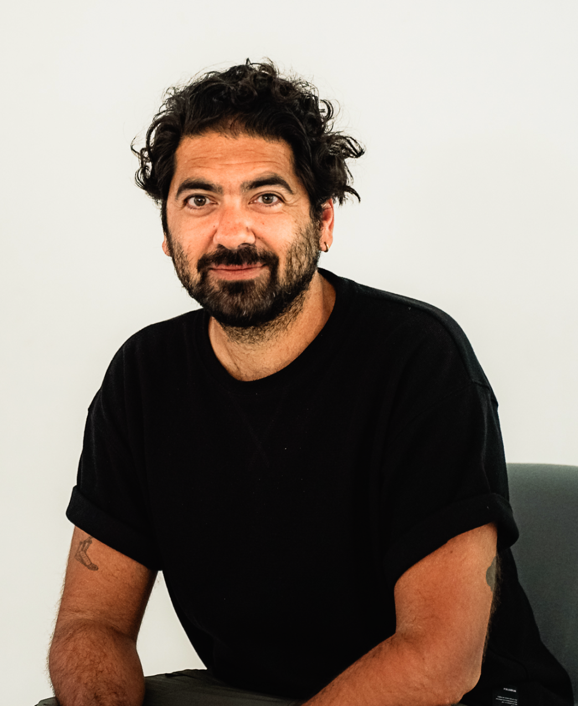

Firas
El Hallak
Firas El Hallak is an audiovisual artist and curator whose practice explores visual storytelling, space, and community engagement. Based between Belgium and Beirut, he is Artistic Director at Splinter vzw and works across film, installation, new media, scenography, and curation. His projects have been presented internationally, including at Prague Quadrennial 2019 and the International Architecture Biennale Rotterdam. He holds an MA in Visual and Scenic Arts from Holy Spirit University of Kaslik and a postgraduate degree in Digital Storytelling from KASK in Ghent. He also teaches Sound Theory at the Lebanese University. His collaborative, site-specific practice approaches art as a way of engaging with architecture, communities, and social memory.